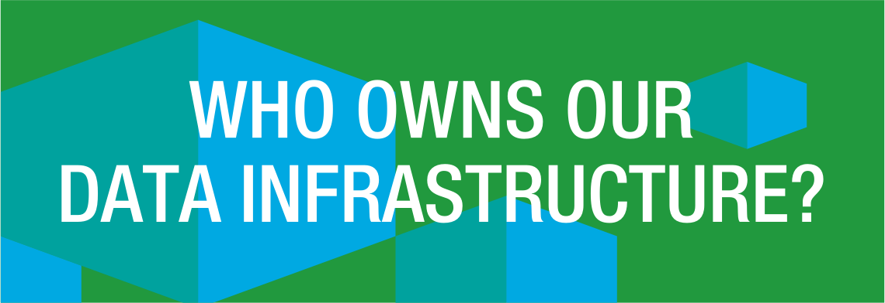

A year in open data: How ODI paved the way for a stronger data infrastructure in 2015
At the ODI, we work with external partners to shape, create and promote the social, environmental and economic benefits that open data can bring to different communities and sectors around the world.
To mark the end of an action-packed year in open data, we are reflecting on some of the exciting stories we have worked on in 2015 in a 'year in open data’ series.
In the first blog in the series, Emma Thwaites recaps the ODI's work highlighting how data infrastructure is vital to society: from starting a debate about who owns it to helping governments understand their roles in building it.

Back in May, we launched a paper, ‘Who owns our data infrastructure?’ at the International Open Data Conference in Ottawa and blogged about it in The Huffington Post. Data had become infrastructure without many people realising it and we wanted to start a debate. Data is increasingly vital to the operation of our society. As our CEO Gavin Starks said in The Times Raconteur this June, “it’s time we took our data infrastructure as seriously as our physical infrastructure.”
Early work
We were inspired to start the debate by our experience of trying to build an open address list for the UK, following the 2013 sale of the Postcode Address File (PAF) with Royal Mail. This sale showed a lack of understanding of the importance of data infrastructure, resulting in unintended consequences. Address data is a vital asset for any modern society but the UK’s current model is paid and closed reducing the number of people who can use addresses to deliver services or maintain addresses to increase quality.
Organisations can hold huge amounts of data that is extremely valuable to them. But just like some physical infrastructure, that data can be valuable to wider communities too. When part of our data infrastructure – that should clearly be open for anyone to access, use and share – is instead locked away, the negative impact can be significant.
Lessons from Open Addresses
In 2015, following the award of a grant from the UK Government’s Release of Data Fund, the ODI launched Open Addresses Ltd, aiming to pilot the development of an open address database for the UK. Our Technical Director, Jeni Tennison blogged at the time, saying: “Addresses are woven into the fabric of our national infrastructure. They connect us to the wider world and help us to access a huge network of services”. The ODI’s report about this work suggested that: “businesses, organisations, government and members of society need to be able to rely on access to sustainable, high-quality data in order to build new business models, plan better services and products and gain insights into how we live.” Yet building an open address database for the UK using a collaborative model proved to be extremely challenging, largely because: “the legal situation around address data is complex and unresolved, making innovation in the sector extremely difficult”.
While this pilot highlighted the legal complexities that emerge when public data assets pass into private ownership, it also showed that there were no technical or business barriers to developing strong data infrastructure. The project enabled us to test technical implementation and open business models using a real example. Pilots like these help to ground otherwise theoretical thinking and give a valuable reference case to inform debate and delivery. For us, it shows that building a strong data infrastructure isn’t just a theoretical possibility but that it can be achieved and will have a large impact, while highlighting the remaining barriers to achieving that goal.
Urgent need
In the UK, the need for data infrastructure to move to the centre of the political and social agenda is becoming more urgent as the government considers the future ownership of bodies such as Ordnance Survey, the Met Office, Companies House and the Land Registry, all of which hold vast amounts of data. At the announcement in April that the UK was to have a Chief Data Officer, we called for the role to cover the protection of key UK public data assets as part of wider data infrastructure.
We know that the ODI’s calls for action on data infrastructure are being heard and resonating with different groups. In November we heard the Royal Academy of Engineering reference our work on data infrastructure to help explain how to create the right conditions for innovation. In October, our co-founder Sir Nigel Shadbolt was invited to feature on BBC Radio Four’s flagship consumer show, You and Yours, with an audience of about three million listeners. He was there in response to PAF-related issues that had been flagged by a listener, and discussed his concerns at more public data assets passing into private hands without appropriate governance. The UK's Royal Statistical Society has also joined in our call to strengthen data infrastructure in an open letter to Lord Adonis, the new Chair of the new Infrastructure Commission.
While it’s important for consumers to understand what is happening to their data, it’s clearly of national importance that our governments and policymakers know the implications of failing to take a planned approach to the ownership of public data assets. The Public Administration Select Committee has already concluded that the inclusion of the PAF in the Royal Mail sell-off was a mistake. That particular horse has bolted and the stable door cannot be shut, but there are indications that the current government is ready to take a more considered approach.
At the ODI Summit in November, Minister Matt Hancock announced that the Cabinet Office would be modernising its data infrastructure as a matter of priority. Nigel Shadbolt was given a new role as data advisor to government and the ODI was asked to help the Cabinet Office connect with businesses, start-ups and innovators in the UK’s data economy. Highlighting its continued importance, members of the summit audience addressed questions to the Minister specifically relating to PAF and its impact on civil society and businesses.
On 25 November, in the Autumn Spending Review, the Chancellor George Osborne put significant emphasis on both the digital economy and on infrastructure. The ODI responded with renewed calls on Ministers to strengthen data infrastructure. It’s clear that the benefits of open data (on which the ODI has also focused in 2015) – their contribution to the economy, their business potential and their enormous societal and cultural value (to name just three) – will be enhanced by orders of magnitude if we have a solid data infrastructure.
As Gavin Starks said in his evidence to the UK Parliament’s Science and Technology Committee and Gavin and Hetan Shah of the Royal Statistical Society said in a letter to the UK’s National Infrastructure Commission “the cities, countries and even continents that build the most robust and open data infrastructure will have an enormous advantage in the 21st Century economy”.
We’ll be spending more time in 2016 making this case to citizens, businesses, civil society and governments across the world.
Emma Thwaites is Communications Associate at the ODI. Follow @EmmaThwaites on Twitter.